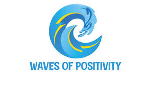

Trade Mark Journal No.2026/008 20 February 2026
UK00004333489 1 February 2026 (41)

- Class 41
- Organising of sporting events; Organising sporting events; Organising of sports events; Arranging of sporting events; Organisation of sporting events; Organising of sports competitions and events; Organisation of sporting events and competitions; Production of sporting events; Organisation of entertainment events; Organising of recreational events; Organising community sporting events; Arranging of cultural events; Organisation of cultural events; Hosting of entertainment events; Organising of sporting events, competitions and sporting tournaments; Organising of football events; Conducting of entertainment events; Organising community cultural events; Organisation of cycling events; Organising events for entertainment purposes; Organisation of entertainment and cultural events; Organisation of educational events; Arranging of educational events; Entertainment services relating to sporting events; Organising of sports and sports events; Organizing cultural and arts events; Conducting of educational events; Conducting of live entertainment events; Provision of recreational events; Organising of sporting activities or competitions; Arranging and conducting of sports events for charitable purposes; Entertainment services in the nature of arranging social entertainment events; Organisation of sporting activities and competitions; Arranging professional workshop and training courses; Arranging of workshops and seminars; Conducting workshops [training]; Arranging of workshops; Seminars; Organisation of seminars; Workshops for cultural purposes; Organisation of educational seminars; Workshops for recreational purposes; Conducting seminars; Conducting training seminars for clients; Arranging of seminars; Organising of educational conferences; Organisation of Webinars; Arranging and conducting of educational seminars; Arranging of seminars relating to training; Organising of educational exhibitions; Organising of education conferences; Organisation of meetings and conferences; Organisation of training courses; Educational services for teaching manual writing; Arranging, conducting and organization of seminars; Training and instruction; Production and presentation of radio programmes; Training services in the field of project management; Publication of training manuals; Arranging and conducting of seminars; Seminars (Arranging and conducting of -); Arranging and conducting seminars; Organising of education exhibitions; Conducting of educational conferences; Organising of conferences for educational purposes; Educational demonstrations; Organising of commercial training; Arrangement of seminars for educational purposes; Arranging for students to participate in educational courses.
Suly Peerally